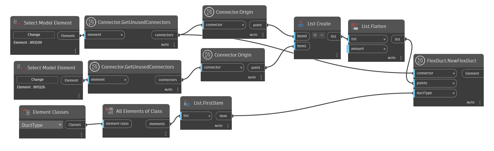
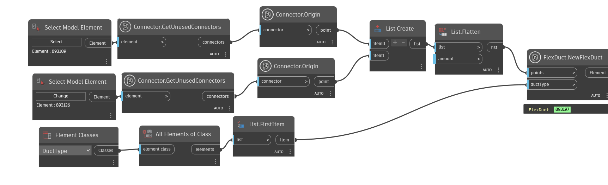
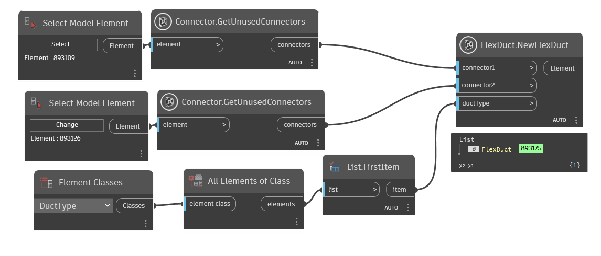
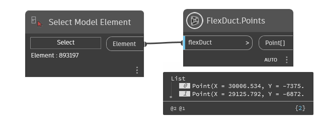

Class FlexDuct
- Namespace
- OpenMEPRevit.Element
- Assembly
- OpenMEPRevit.dll
A flex duct in the Autodesk Revit MEP product.
public class FlexDuct- Inheritance
-
FlexDuct
- Inherited Members
Methods
CreateByConnectorAndPoints(Connector, List<Point>, Element)
Adds a new flexible duct into the document, using a connector, point array and duct type.
[NodeCategory("Create")]
public static Element? CreateByConnectorAndPoints(Connector connector, List<Point> points, Element ductType)Parameters
connectorConnectorThe connector to be connected to the duct, including the end points.
pointsList<Point>The point array indicating the path of the flexible duct.
ductTypeElementThe type of the flexible duct.
Returns
- Element
If creation was successful then a new flexible duct is returned, otherwise an exception with failure information will be thrown.
Examples

Remarks
If the connector is a fitting or equipment connector of the correct domain, and if the connector's direction matches the direction of the flexible duct to be created, the connectors will be automatically connected. A transition fitting will be added at the connector(s) if necessary. If the connector's type, domain, does not match the one of the input connector, no connection will be established.
Exceptions
- ArgumentNullException
Thrown when the input argument connector or points is null.
- InvalidOperationException
Thrown when the flexible duct cannot be created or regenerate fails.
- ArgumentException
Thrown if the flexible duct type does not exist in the given document.
CreateByListPoint(Element, List<Point>)
Adds a new flexible duct into the document, using a point array and duct type.
[NodeCategory("Create")]
public static Element? CreateByListPoint(Element ductType, List<Point> points)Parameters
ductTypeElementThe type of the flexible duct.
pointsList<Point>The point array indicating the path of the flexible duct, including the end points.
Returns
- Element
If creation was successful then a new flexible duct is returned, otherwise an exception with failure information will be thrown.
Examples

Exceptions
- ArgumentNullException
Thrown when the input argument points is null.
- InvalidOperationException
Thrown when the flexible duct cannot be created or regenerate fails.
- ArgumentException
Thrown if the flexible duct type does not exist in the given document.
CreateByTwoConnector(Element, Connector, Connector)
Adds a new flexible duct into the document, using two connector, and duct type.
[NodeCategory("Create")]
public static Element? CreateByTwoConnector(Element ductType, Connector connector1, Connector connector2)Parameters
ductTypeElementThe type of the flexible duct.
connector1ConnectorThe first connector to be connected to the duct.
connector2ConnectorThe second connector to be connected to the duct.
Returns
- Element
If creation was successful then a new flexible duct is returned, otherwise an exception with failure information will be thrown.
Examples

Remarks
If the connectors are fitting or equipment connectors of the correct domain, and if the connectors' direction match the direction of the flexible duct to be created, the connectors will be automatically connected. A transition fitting will be added at the connector(s) if necessary. If the connector's type, domain, does not match the one of the input connector, no connection will be established.
Exceptions
- ArgumentNullException
Thrown when the input argument connector1 or connector2 is null.
- InvalidOperationException
Thrown when the flexible duct cannot be created or regenerate fails.
- ArgumentException
Thrown if the flexible duct type does not exist in the given document.
Points(Element)
The points of the flex duct.
[NodeCategory("Query")]
public static IEnumerable<Point> Points(Element flexDuct)Parameters
flexDuctElement
Returns
- IEnumerable<Point>
Examples

Remarks
This property is used to retrieve the points of flex duct, including the end points. If the end points are changed, the connection will be maintained by Revit automatically. The set operation will fail if the modification makes the connection invalid.
flex Duct